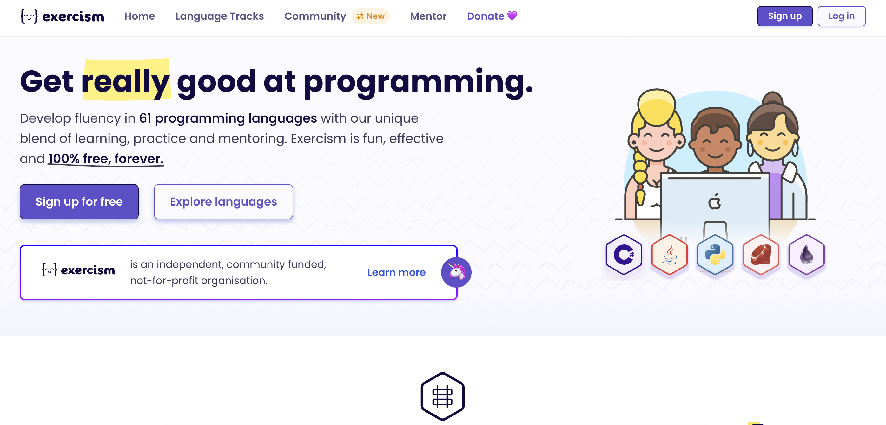
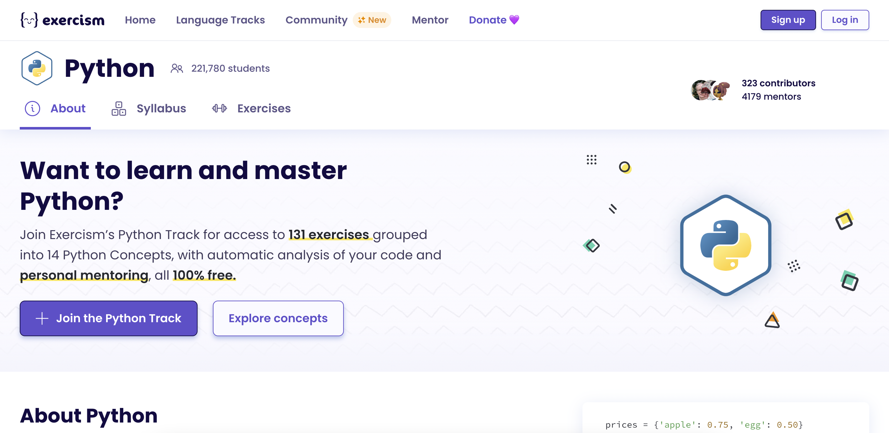
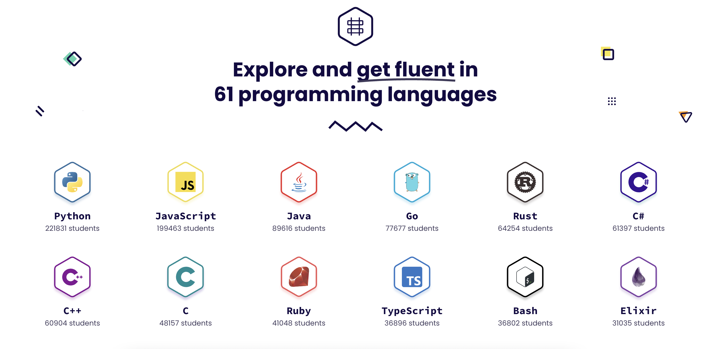

今回の製作をするにあたって、私たちの班はやることが全く決まりませんでした。「プログラミングでこんなことはできないか？」という問いに対して、Pythonがそもそも何ができるものなのか理解しきれていないように感じました。そのため凝り固まった結果に辿り着き、最終的には道用先生に助けをいただいてアイディアに達しました。
私たちは「何が今欲しい？」という問いから派生させることにしました。その結果「課題をしてくれるものや睡眠時間」などと出る中で「お金」という案がありました。そこから派生して、「株」が思いつきました。
株を調べてみたところ職業によってバラバラに調べる必要があることがわかりました。そこで私たちが考えたのが数字を一つ押すだけで日経新聞の株価リストを見ることができるものを作るということです。
前回の課題で選択をする機能を使ったのでその機能を使って試してみました。
◯コード
a = ["stock.py", "systemsoftware.py", "retail.py", "finamce.py", "massmedia.py"]
print(a[0])
print(a[1])
print(a[2])
print(a[3])
print(a[4])
何にもできなかったです。
Pythonに対して理解の「り」の字もついていけてないのかというくらい、何もできなかったのが率直な感想でした。HTMLのように結果がサイトのように見られないことや、Pythonの言語が全くわかっていないことが原因であったと考えられるため、もう少しPythonとお友達になってみたいと思います。
Pythonを学んでいて苦戦していることを、1 on １のEnglish Tutorial の先生に伝えたところ、紹介してもらったのがexercismでした。
これは無料でプログラミングを勉強することのできるサイトです。

Pythonを練習することもできます。また、ここでは他人のコードを読んで見ることができたり、日本語版がないため英語の練習になったりもします。シンプルな単語ばかりで難しい英語はあまり見受けられない印象でした。Pythonの場合130以上の練習機能がありました。テストコードをクリアするように実装していくこともできるので、いろいろ試してみたいと思います。

また、Python以外の物もあるのでぜひチェックしてみてください！

Exercism